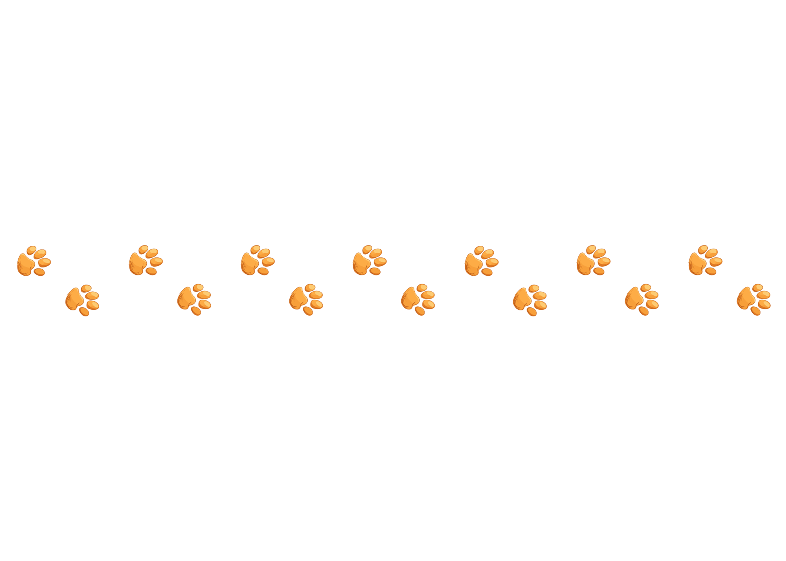

Your cat will go Bonkers .
..for the world’s best testing cat food, sourced with only the finest ingredients. Made with love from the heart of Mississippi.

Veternarians go bonkers for our tasty kitty formula.


I've never seen a cat food like this before. The nutritional balance
is exceptional, and I've noticed remarkable improvements in the coat
and energy levels of the cats I've recommended it to. It's a
game-changer in feline nutrition.
Dr.Sasha
Girard, OH
I've never seen a cat food like this before. The nutritional balance
is exceptional, and I've noticed remarkable improvements in the coat
and energy levels of the cats I've recommended it to. It's a
game-changer in feline nutrition.
Sam Jonson
Austin, TX
I've never seen a cat food like this before. The nutritional balance
is exceptional, and I've noticed remarkable improvements in the coat
and energy levels of the cats I've recommended it to. It's a
game-changer in feline nutrition.
Eva Martin
Phoenix, AZ
I've never seen a cat food like this before. The nutritional balance
is exceptional, and I've noticed remarkable improvements in the coat
and energy levels of the cats I've recommended it to. It's a
game-changer in feline nutrition.
John Cornely
Sacramento, CA

FACT 1
Free from artificial colors, flavors, and preservatives, our cat food offers a natural and nutritious diet for your feline friend.
FACT 2
Enriched with omega-3 and omega-6 fatty acids, it promotes a shiny coat and healthy skin, making it ideal for cats with sensitive skin
FACT 3
Packed with high-quality protein, our new cat food supports strong muscles and a healthy heart in cats of all ages.
FACT 4
Formulated with prebiotics and probiotics, this cat food aids in digestion and supports a balanced gut microbiome.
friskay